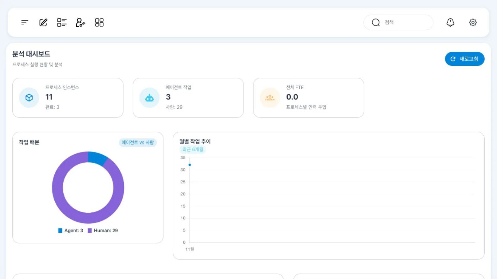
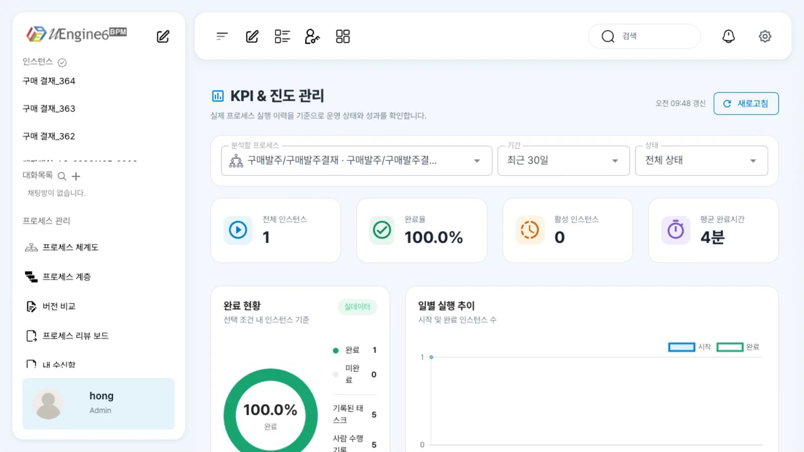
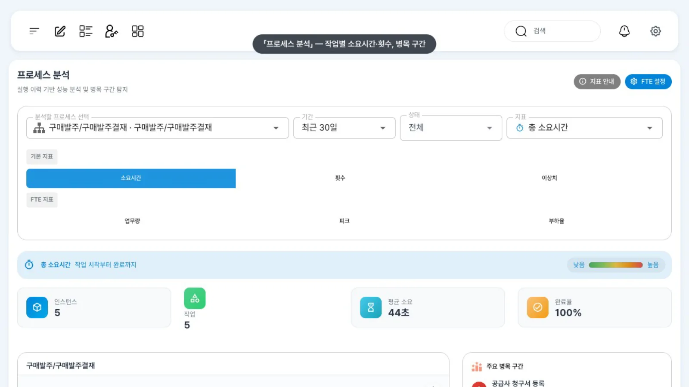
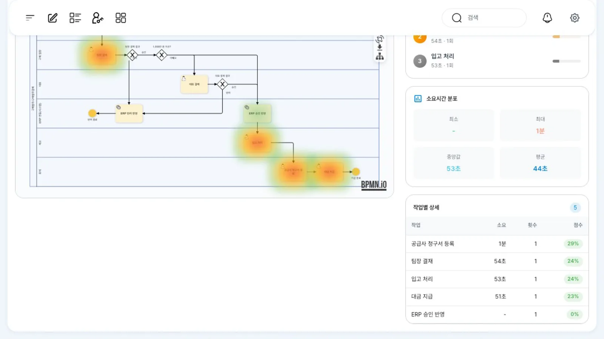

분석 서비스(analytics)를 띄우고 ETL을 한 번 실행해 인스턴스·작업 기록을 분석 표로 옮긴 뒤 「분석 대시보드」「KPI & 진도 관리」「프로세스 분석」 화면을 봅니다. 시연 데이터이므로 숫자는 작습니다.
무엇을 · 왜#
운영 화면(인스턴스 찾고 살피기)은 인스턴스 하나를 자세히 살펴봅니다. 「이번 달 구매 결재가 몇 건 끝났나」, 「어느 단계에서 오래 걸리나」 같은 질문에는 여러 인스턴스를 모아 집계하는 분석이 필요합니다(Camunda의 Optimize에 해당).
uEngine6의 분석은 별도 서비스 analytics(저장소 analytics/ 모듈, Spring Boot)입니다.
| 구성 | 하는 일 |
|---|---|
ETL(POST /api/analytics/etl/run) |
엔진 표(bpm_procinst, bpm_worklist)를 읽어 분석 표로 옮깁니다. 매번 원본 전체를 읽고 자연키(인스턴스 ID, 작업 ID)로 덮어쓰는 스냅샷 방식입니다 |
| 분석 표 | 차원 BPM_DIM_DATE·BPM_DIM_PROCESS_DEF·BPM_DIM_ACTIVITY·BPM_DIM_ACTOR, 사실 BPM_FACT_PROC_INST·BPM_FACT_TASK, 목표 BPM_KPI_TARGET·BPM_KPI_PROCESS_STATE |
| 화면 | 프런트의 /analytics, /analytics/kpi, /analytics/heatmap. 게이트웨이의 /api/analytics/** 라우트로 analytics를 호출합니다 |
사람 작업과 자동 작업은 담당자 유무로 나눕니다(담당자가 있으면 사람, 없고 도구가 있으면 자동). 반송·되돌리기(RETURN·BACKTOHERE)는 재작업으로 집계합니다.
따라 하기#
- analytics 띄우기와 ETL. 로컬 스택은 analytics를 기본으로 실행하지 않습니다. 게이트웨이가 가리키는 포트(이 스택은 9295)로 실행하고 ETL을 한 번 실행합니다. JDK 21이 필요합니다. 이 장의 화면은 시연 스택에서 실제로 실행한 인스턴스(ERP 구매 발주 예제, 계정계 예제, 튜토리얼 실행)를 ETL로 옮긴 결과입니다. 더미 데이터는 넣지 않았습니다.
ANALYTICS_SERVICE_PORT=9295 POSTGRES_PORT=5632 \ java -jar analytics/target/uengine-analytics-1.1-SNAPSHOT.jar curl -X POST http://localhost:9295/api/analytics/etl/run # 예: {"sourceProcessInstances":8,"sourceTasks":25,"processDefinitions":5,"activities":13,"actors":5,"processFacts":8,"taskFacts":25} - 「분석 대시보드」. 홍길동(
hong)으로/analytics를 엽니다. 위쪽에 「프로세스 인스턴스」(아래 줄에 완료 건수), 「에이전트 작업」(아래 줄에 사람 작업 수), 「전체 FTE」가 있고, 「작업 배분」(에이전트 vs 사람)과 「월별 작업 추이」가 이어집니다. 숫자는 분석 표에 있는 모든 프로세스를 합친 값입니다(이 시연에서는 인스턴스 11, 완료 3, 에이전트 작업 3, 사람 작업 29).
분석 대시보드 - 「KPI & 진도 관리」.
/analytics/kpi는 처음에 모든 프로세스를 보여 줍니다(인스턴스 11, 완료율 27.3%). 「분석할 프로세스」에서구매발주/구매발주결재(ERP 예제)를 고르면 「전체 인스턴스」 1, 「완료율」 100.0%, 「활성 인스턴스」 0, 「평균 완료시간」 4분으로 바뀌고, 아래 「프로세스별 성과」와 「최근 인스턴스」도 그 프로세스로 걸러집니다.
KPI & 진도 관리 - 「프로세스 분석」.
/analytics/heatmap의 「분석할 프로세스 선택」에구매발주를 입력해 고릅니다. 지표(「소요시간」「횟수」「이상치」)를 고를 수 있고, 작업별 소요시간과 병목 점수가 계산됩니다. 이 시연에서는 「공급사 청구서 등록」 1분(병목 점수 29%), 「팀장 결재」 54초, 「입고 처리」 53초 순이었습니다.
병목 구간 - 히트맵. 화면을 아래로 내리면 프로세스 그림 위에 오래 걸린 작업이 붉게 표시되고, 「소요시간 분포」와 「작업별 상세」 표가 이어집니다.

프로세스 그림 위의 히트맵
설정 레퍼런스#
analytics 설정(환경 변수)#
| 변수 | 기본값 | 뜻 |
|---|---|---|
ANALYTICS_SERVICE_PORT |
9095 |
포트. 게이트웨이의 ANALYTICS_SERVICE_URI와 맞춥니다 |
POSTGRES_HOST·POSTGRES_PORT·POSTGRES_DB·POSTGRES_USER·POSTGRES_PASSWORD |
localhost·5432·uengine·uengine·uengine |
엔진과 같은 DB |
UENGINE_DB_SCHEMA |
public |
원본·분석 표 스키마 |
ANALYTICS_DDL_AUTO |
update |
개발용 표 자동 생성. 운영은 infra/postgres/migration/2026-08-20-analytics-etl.sql을 먼저 적용 |
UENGINE_ANALYTICS_ETL_ENABLED |
false |
주기 ETL 켜기 |
UENGINE_ANALYTICS_ETL_INTERVAL_MS · …_INITIAL_DELAY_MS · …_TIME_ZONE |
60000 · 30000 · Asia/Seoul |
주기·첫 실행 지연·날짜 기준 |
API#
curl -X POST http://localhost:9295/api/analytics/etl/run # ETL 한 번
curl http://localhost:9295/api/analytics/etl/status # 마지막 실행
curl "http://localhost:9295/api/analytics/dashboard?from=2026-11-01&to=2026-11-30&status=ALL"
curl http://localhost:9295/api/analytics/dimensions/processes
직접 SQL로#
select pd.definition_name, count(*) as process_count, avg(f.duration_seconds) as avg_seconds, sum(f.rework_task_count) as rework
from bpm_fact_proc_inst f join bpm_dim_process_def pd on pd.process_key = f.process_key
group by pd.definition_name;
알려진 제약#
- 이 로컬 스택의
stack/up.sh는 analytics를 띄우지 않습니다. 분석 화면을 쓰려면 위처럼 따로 실행하고 ETL을 실행하거나 주기 ETL을 켭니다. analytics가 없으면 화면은 비어 있습니다. - ETL은 덮어쓰기만 하고 삭제하지 않습니다. 원본 인스턴스를 삭제해도 분석 표의 행은 남아 집계에 포함됩니다. 이 시연의 숫자에도 시험 후 삭제한 인스턴스가 포함되어 있습니다(예: 「구매발주결재」 인스턴스 1건은 원본에서는 이미 삭제되었습니다). 운영에서는 인스턴스를 삭제하지 않으므로 문제가 덜하지만, 시험 데이터를 삭제했다면 분석 표도 함께 정리해야 합니다.
- 「전체 FTE」는 FTE 설정을, 「Domain별 Sub Process」는 프로세스 체계도의 도메인 설정을 해야 값이 생깁니다. 이 장에서는 설정하지 않았습니다.
- 저장소의 더미 데이터 스크립트(
analytics/scripts/seed-dashboard-dummy-data.sh)는 이 튜토리얼에서 실행해 보지 않았습니다.
확인 문제#
방금 끝난 인스턴스가 대시보드 숫자에 안 들어갑니다. 왜인가요?
분석 화면은 분석 표를 읽습니다. ETL이 다시 실행되어야 새 기록이 옮겨집니다. POST /api/analytics/etl/run을 호출하거나 주기 ETL을 켭니다.
되돌리기를 많이 한 프로세스는 어디서 드러나나요?
ETL이 되돌리기·반송 기록을 재작업으로 집계합니다. 「KPI & 진도 관리」의 프로세스별 성과 「재작업」 칸이나 bpm_fact_proc_inst.rework_task_count에서 확인합니다.